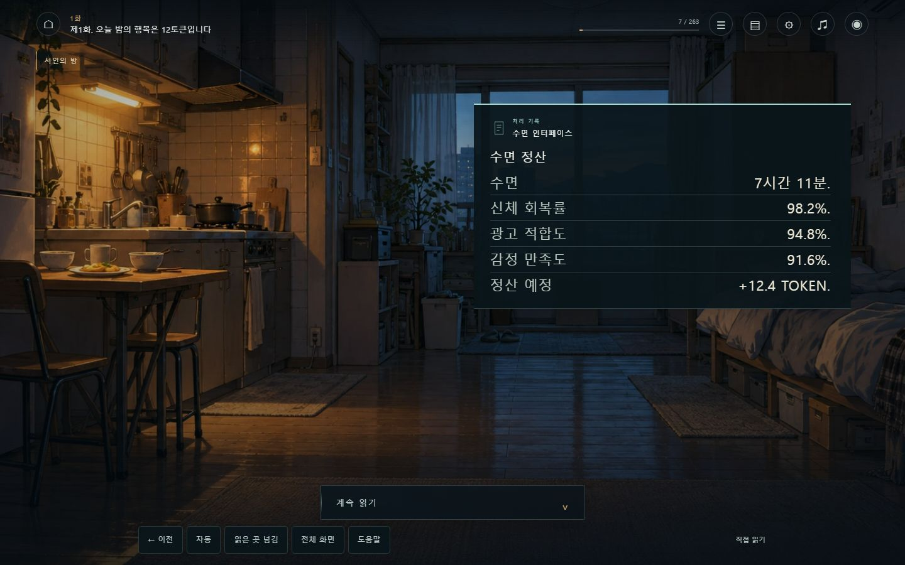
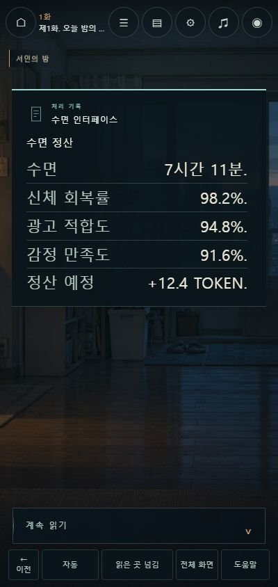
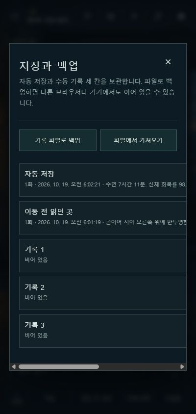
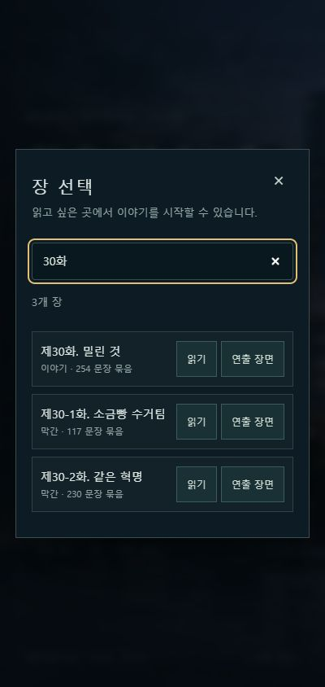

손으로 누르기 쉬운 크기
새 읽기 도구의 터치 영역은 높이 44px 이상입니다. 휴대폰에서는 별도 한 줄로 유지하고, 화면 정보 숨김을 켜면 도구 줄도 함께 사라집니다.
플레이어 업데이트 · 읽기와 진행, 저장
이전 문장으로 돌아가고, 이미 읽은 곳을 넘기고, 잠시 다른 장을 살펴보는 일.
읽는 흐름을 편하게 조절할 수 있도록 도구와 저장 방식을 다듬었습니다.
이 보고서는 이번 편의 기능 변경과 실제 확인 범위를 정리합니다. 개인 AI와 뉴럴피드의 장면 연출, 원고와 설정은 그대로 이어집니다.
읽는 중의 조작
이전·자동·읽은 곳 넘김·전체 화면·도움말을 하단에 모았습니다. 본문과 ‘계속 읽기’, 신경 접속 영역이 가려지지 않도록 도구 줄의 공간을 따로 확보했습니다.
도구 모양 예시입니다. 실제 게임에서는 버튼으로 조작하며, 켜진 진행 모드는 점과 테두리·하단 강조로 표시합니다.
새 읽기 도구의 터치 영역은 높이 44px 이상입니다. 휴대폰에서는 별도 한 줄로 유지하고, 화면 정보 숨김을 켜면 도구 줄도 함께 사라집니다.
글자 크기는 16–28px, 자동 진행의 추가 여유는 0.5–5초로 설정합니다. 여기에 문장 길이를 반영해 긴 문장을 읽을 시간을 더합니다.
화살표·Enter·Space로 읽고 A로 자동 진행, K로 읽은 곳 넘김을 켭니다. 도움말에서 저장·지난 이야기·화면 숨김 등의 단축키를 확인할 수 있습니다.
다시 화면에 왔을 때는 읽기를 직접 이어갑니다. 창을 닫거나 저장을 불러왔다고 자동 진행이 다시 출발하지 않도록 했습니다. 조작 창을 살펴보는 동안 이야기가 지나가는 상황을 줄였습니다.
읽던 위치와 기록
다른 장면을 둘러보는 동작과 현재 위치를 보관하는 동작을 연결했습니다. 저장을 바꾸기 전에는 확인하고, 파일로 기록을 옮길 수 있습니다.
장 선택에서 화수와 제목을 검색할 수 있고, 읽던 장에는 표시가 붙습니다. 다른 장이나 연출 장면으로 이동하기 전의 위치는 저장과 백업의 ‘이동 전 읽던 곳’에서 돌아올 수 있습니다.
세 개의 수동 저장칸에 덮어쓰기 확인을 더했습니다. 취소하면 기존 기록을 유지합니다. 파일로 내보내기와 가져오기는 기기 사이에서 기록을 직접 옮기는 방법으로 사용할 수 있습니다.
파일 백업은 직접 내려받고 가져오는 방식입니다. 자동으로 다른 기기에 동기화되는 기능은 추가하지 않았습니다. 이번 작업은 원고·설정과 개인 AI·뉴럴피드의 원문을 바꾸지 않고 플레이어의 조작과 기록 관리에 적용했습니다.
실제 플레이어 화면
이번 기능을 적용한 실제 브라우저 화면입니다. 이미지를 누르면 원래 크기로 열립니다. PC와 휴대폰의 대표 화면에서 본문·도구 줄·기록 창의 배치를 살펴봤습니다.

하단 도구를 본문 밖에 두고, 이전·자동·읽은 곳 넘김에 바로 접근할 수 있게 했습니다. 개인 AI와 뉴럴피드의 기존 읽기 영역을 유지합니다.

44px 높이의 도구를 한 줄에 배치하고, 본문과 ‘계속 읽기’ 영역 아래에 여백을 남겼습니다.

저장칸과 이동 전 위치를 한곳에서 확인합니다. 파일 내보내기·가져오기와 덮어쓰기 확인도 이 창에서 처리합니다.

화수와 제목을 검색하고 읽던 장을 구분합니다. 장과 연출 장면을 옮기기 전의 위치도 남깁니다.
구현과 검증의 범위
기능 연결, 자동 검사, 대표 화면의 실제 조작을 구분했습니다. 기존 사용자의 읽기 기록과 분리한 검증용 브라우저 주소에서 확인했습니다.
실제 조작 확인은 기존 사용자의 읽기 기록이 있는 4173 주소와 분리한 4176 주소에서 진행했습니다. 가져오기에는 실제 독서 이력과 구분되는 검증용 기록을 사용했습니다.
새 진입·불러오기 후 수동 대기, 선택 장면과 장 끝의 중단, 탭 비활성화 시 중단을 구현했습니다. 이 중 모달·화면 숨김·미독 정지와 대표 저장 화면은 실제 조작으로 확인했으며, 모든 중단 조건을 모든 브라우저에서 실행한 검증으로 확대해 보고하지 않습니다.
전체 화면 사용 가능 여부는 브라우저와 실행 환경에 따릅니다. 버튼은 연결했지만 실제 전환은 확인하지 않았습니다. 저장 실패 처리는 반환값과 코드를 검토했으며, 저장 공간 오류를 강제로 일으킨 화면 확인은 남아 있습니다.
이번 기록은 편의 기능에 한정됩니다. 원고의 재미나 상업적 완성도에 대한 판정, 전체 이야기의 연속 플레이 검수 결과로 환산하지 않습니다.
읽던 문장부터, 자신의 속도로.하단의 도움말에서 조작 방법을 확인할 수 있습니다.
게임 열기